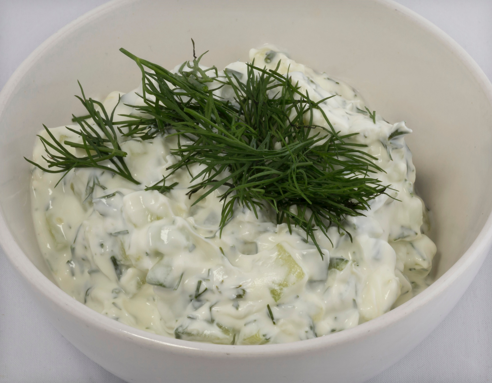

<!DOCTYPE html>
<html lang="en">
<head>
    <meta charset="UTF-8">
    <meta http-equiv="X-UA-Compatible" content="IE=edge">
    <meta name="viewport" content="width=device-width, initial-scale=1.0">
    <title>JV's Kitchen: Tzatziki</title>
    <link rel="stylesheet" href="styles.css">
</head>
<body>
    
</body>
</html>
<h1>Tzatziki</h1>

    <h2>Description</h2>
    <p>Tzatziki is a yogurt-based cucumber salad.<br>
      It has a creamy texture and lemony flavor.<br>
      Cucumbers serve to add crunch and provide neutral separation of flavors.<br> 
      Dill has a flavor that compliments dairy, and it is the most prominent flavor in this wonderful concoction.<br>
      Tzatziki is tremendous with falafel and tabbouleh!
      </p>
    <h3>Ingredients</h3>
      <ul>
        <li>1/2 cup finely grated cucumber</li>
        <li>1 cup whole milk Greek Yogurt</li>
        <li>1 tbsp lemon juice</li>
        <li>1 clove finely grated fresh garlic</li>
        <li>Salt, to taste</li>
        <li>1 - 2 tsp minced dill</li>
        <li>1 tbsp minced mint (optional)</li>
        <li>1 tbsp olive oil</li>
      </ul>
      <h4>Steps</h4>
      <ol>
        <li>
            <em>After grating the cucumber: </em>
            Using a tea towel or cheesecloth over a bowl, wring the moisture from the grated cucumber. Set the liquid aside.</li>
        <li>In a medium bowl, combine the cucumber, yogurt, lemon juice, olive oil, garlic, dill, and mint.</li>
        <li>Add cucumber water until the consistency of the tzatziki sauce is to your liking. Add salt to taste.</li>
        <li>Cover and refrigerate until ready to use! Enjoy!</li>
      </ol>
      <footer> <a href="index.html">Return to Homepage </footer>